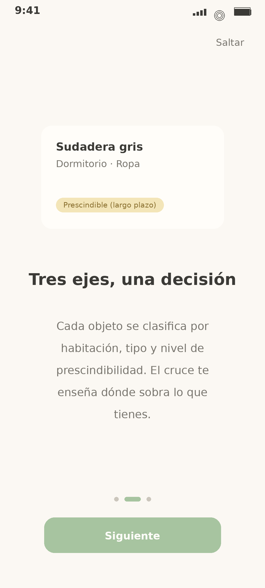
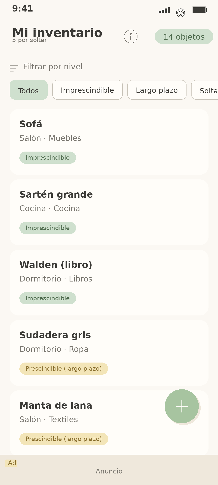
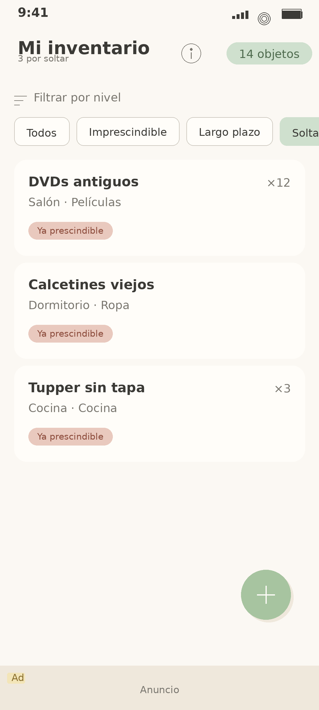
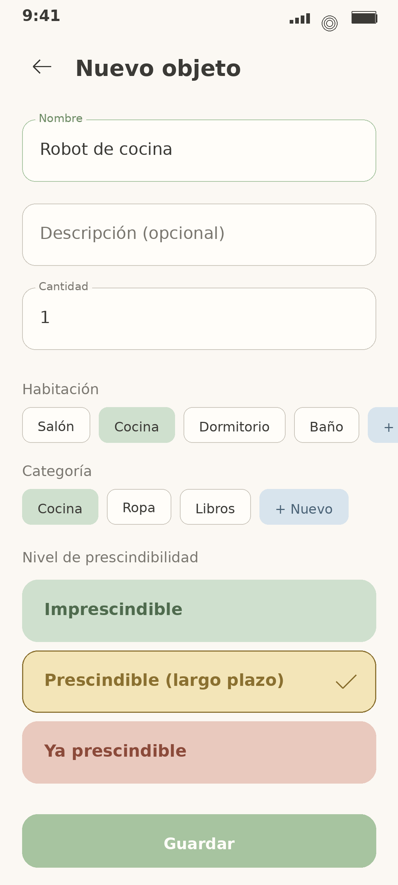
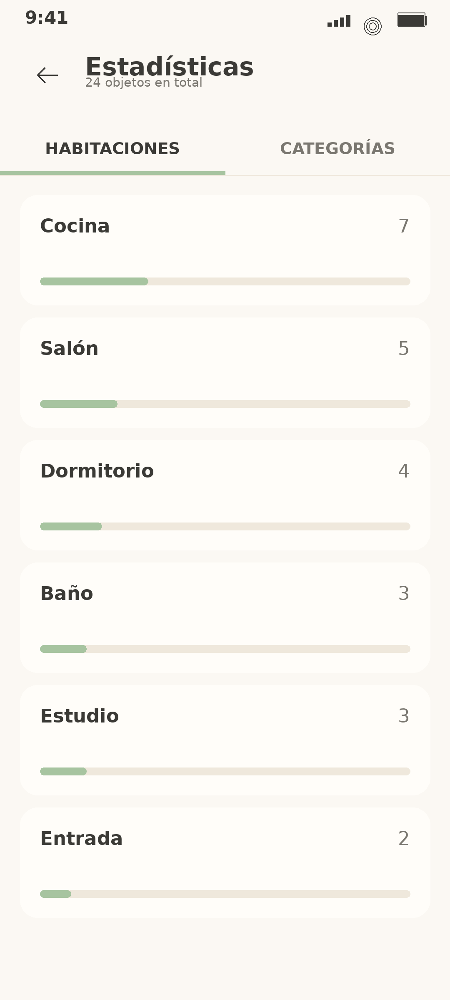

Suelta lo que sobra.
Próximamente en Google Play App Android · Gratis · Sin cuentasCada objeto se clasifica por habitación, categoría y nivel de prescindibilidad. El cruce te enseña dónde sobra lo que tienes.
Lo que usas, lo que importa, lo que se queda.
Lo que aún tiene sentido — pero que algún día soltarás.
Lo que sobra hoy. Por aquí empieza el camino.





Todo se guarda localmente en tu dispositivo. No requiere cuenta, no requiere registro, no requiere internet. Nada se sube a la nube. La app no recoge datos personales. Política de privacidad.